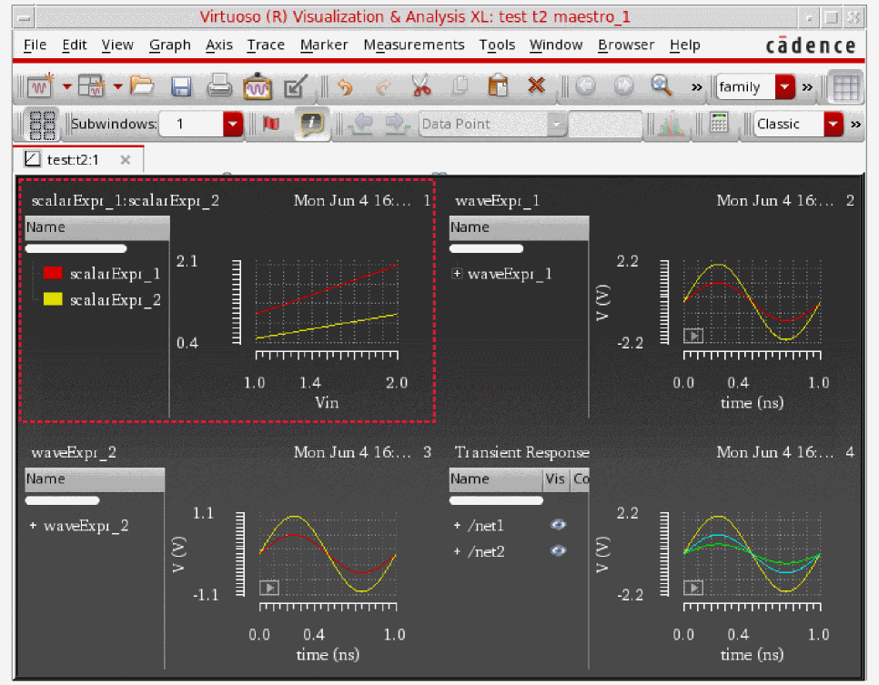

11
Viewing Results
This chapter covers the following topics:
- Viewing the Simulation Results
- About Results Views
- Backannotating from ADE Explorer Results
- Re-evaluating Expressions and Specifications
- Viewing Specification Results in the Results Tab
- Comparing S-Parameter Data
- Working with Datasheets
Viewing the Simulation Results
After a simulation run is complete, the results are displayed in the Value column of the Output Setup.
The Value column includes the signal icon for the output plots and scalar values for results. If the results pass, the background color in the Value column is green. If the results fail, it is displayed in red color. You can mouse-hover in this column to view additional information about the results. For example, the following tooltips appear for the failed and passed results:
The Results tab is displayed when you run a simulation with the following features:
- Multi-point simulation with sweep values defined for parameters or corners
- Monte Carlo Sampling
- Reliability Analysis
-
Checks/Asserts analyses
The Nominal column in the Results tab displays the simulation status such as pending, running, error codes, and so on, and the text foreground color is changed based on error code of the result. A waveform icon is displayed in this column when the output result is a wave.
By default, all columns and types of information appear on the Results tab. You can show and hide various columns and types of information using the  button.
button.
Corners conditions appear in a table along the top portion of the tab. You can switch the view by using the Select the results view drop-down list.
You can export results to HTML or a comma-separated values file.
Hiding and Showing Data on the Results Tab
The following data appears on the Results tab for the Detail View.
You can show or hide columns and rows displayed on the Results tab by using the
(Configure what is shown in the table) drop-down on this tab. When you click this button, ADE Explorer shows the following menu.
You can select the column name from this drop-down that you want to hide.
If you run a Monte Carlo simulation, the following options are listed in the Configure what is shown in the table drop-down list:

Hiding Test Details
Test details appear in the Test column on the Results tab. To hide test details, click the Test option. The Test column disappears from the Results tab.
Hiding Specification Details
Specification details appear in the Spec and Weight columns on the Results tab. To hide specification details, click the Spec/Weight option.
Hiding Corner Results
Corner results appear in columns on the Results tab, each result in its own column. To hide corner results columns, click the Corners option.
Hiding Signals
Signals appear as rows with the  icon in the Nominal column and the columns for corners on the Results tab. To hide signals, click the Signals option.
icon in the Nominal column and the columns for corners on the Results tab. To hide signals, click the Signals option.
The signal rows disappear from the Results tab. If you have any measured values for expressions, those are the only values that appear.
Hiding Measured Result Values
Measured result values appear in the Nominal column and the columns for corners on the Results tab.
To show or hide these measured result values, click one of the following options:
- Scalar Expressions: Shows or hides results of the expressions that evaluate to scalar results.
- Waveform Expressions: Shows or hides results of the expressions that evaluate to waveform results.
Hiding Minimum and Maximum Values
The minimum and maximum values appear in the Min and Max columns on the Results tab. To hide minimum and maximum values, click the Min/Max. option. The Min and Max columns disappear from the Results tab.
Showing Only Errors
To show errors only, click the Only Errors option.
Filtering Results Using Column Filters
When the number of outputs are large, you can apply filters to selectively display the results you are interested in viewing. For more details, refer to the section Filtering Results on the Results Tab in the Virtuoso ADE Assembler User Guide.
Showing the Starting Point
The reference point specified for Monte Carlo Sampling run is displayed as the starting point on the Results tab. To show the starting point on the top of the Results tab, click the Starting Point option.
Showing Fixed Parameters for a Design Point
By default, the Results tab displays the names and values of variable parameters, which were used for a particular design point run, on the gray row above the results for a design point. If you also want to view the values of fixed parameters for a design point, choose Fixed Parameters.
Viewing Netlist for Results
To view the netlist generated during a simulation run for a nominal point, right-click in the column for nominal point and choose View Netlist. The nelist (input.scs file for Spectre) is displayed.
However, for a multi-point interactive simulation run, the View Netlist option for all points includes the following sub-options that help you view the changes made during the simulation run:
- View Initial Netlist—Opens the netlist file. It is the same as the View Netlist option for the nominal point.
-
View Variable Changes—Opens the
spectre_change.logfile that displays the variables changed for the current point with respect to the previous point. -
Create Netlist for this Point—Creates netlist for the selected point only.
About Results Views
By default, the Results tab shows the Detail view of results. You can use the Select the results view drop-down list to choose any other view. The views available in ADE Explorer are:
- Detail
- Detail - Transpose
- Optimization
- Status
- Yield
- Checks/Asserts
- Capacitance
Every run mode has a default result view mapped to it. For example, the default result view for the Monte Carlo Sampling run mode is the Yield view.
Detail
Displays the detailed results.
For more information about the columns in the Detail view, see the previous section.
Detail - Transpose
The Detail - Transpose view allows visualization of results across corners. The table on the left side displays corner and sweep conditions for each simulation point, and the table on the right side displays the results and pass, near or fail status for output expressions at each simulation point.
Optimization
The Optimization view displays the Test, Output, Value, Spec, Weight, Min, Max and corners-related columns.
Status
The Status view displays the progress and status of the simulation run, and the contents of the run log file.
Summary
The Summary view displays the summary of the results for output expressions across all corners and sweeps.
The columns in the Summary view are described below:
Yield
The Monte Carlo Yield view displays for all specifications the overall yield estimate based on pass or fail status. The yield estimate for each specification and statistics, such as mean and standard deviation, are also reported. A sample Yield view is displayed in the following figure.
Description of the columns displayed in this view is given below:
 is the estimated variability of the process, Cpk is calculated by using the following equation.
is the estimated variability of the process, Cpk is calculated by using the following equation.The summary row for each specification displays the analysis for that specification across all corners. Summary values are derived as follows:
The gray-colored row at the top displays the Yield Estimate – an estimate of the circuit yield taking into account all of the specifications.
You can specify a confidence level to view the yield estimate confidence intervals.
Capacitance
The Capacitance results view displays the capacitance values saved by Spectre when you enable the allcap parameter in the Save circuit information analysis table of the Save Options form for Spectre. When this parameter is enabled, Spectre runs the netcap analysis as part of its simulation and prints the capacitance contribution from extracted view (DSPF, SPEF), design capacitor, and MOSFET-terminal capacitances.
For more details about this view, see
Using the Detail - Transpose View
Most of the tasks that you can perform in the Detail - Transpose view are the same as in other results views.
Hiding and Showing Columns in the Detail - Transpose View
To hide a column, do the following:
To display all the columns, do the following:
Changing the Order of Columns in the Detail - Transpose View
To change the order of columns, do the following:
Viewing Output, Test, and History Information
To view the output, test and history information, do the following:
-
Place the mouse pointer on the name of the column for the output on the right hand side of the Detail - Transpose view.
The name of the test for which the output is defined is displayed in a pop-up.
Using the Status View
See the following topics for more information about using the Status view on the Results tab:
Stopping the Simulation Run from the Status View
To stop the simulation run, do the following:
Hiding and Showing Information in the Status View
Click the
drop-down on the Results tab. Select the options you want to display. The available options are: Progress Bar, Status Bar, and Run Log. A check mark next to the option indicates that information for that option is being displayed.
Freezing Columns
You can view two areas of the Results tab and lock the columns in one area by freezing columns. When you freeze columns, you select specific columns that remain visible when scrolling in the Results tab.
To freeze columns, do the following:
- Right-click the column to the right of where you want the split to appear and choose Freeze columns.
For example, to freeze the Output column and all the columns to the left of the Output column, right-click the heading for the Output column and choose Freeze columns. This allows you to view the contents of the Output column and all the columns to the left of the Output column when you use the horizontal scroll bar in the Results tab scroll through the results for corners.
Sorting Results in the Detail and Detail-Transpose Views
You can sort data in the Detail or Detail-Transpose result views to view the related data rows together in a the ascending or descending order. For example, you can sort rows by the output name, test name, or in the order of result values in any column.
To sort results based on a specific column in the Detail or Detail-Transpose result views:
-
Click the header of the column that you want to use as base for sorting.
All the rows in the results table are sorted according the values in that column. The up or down arrow on the top-right area of the column header shows if the rows are being arranged in the ascending or the descending order.
-
Click Undo sorting on the toolbar of the Results tab.
The results are rearranged in the default order as they were visible before sorting.

Working with Plotting Templates
You can create a plotting template in ADE Explorer and ADE Assembler to plot resultant waveforms, signals, or scalar values in a specified format in the Virtuoso Visualization and Analysis XL window.
The plotting template drop-down list box is available on the plotting toolbar in the Results tab, as shown in the figure below:
Replace or New Win. If the plotting mode is set as Append or New SubWin, this drop-down is disabled.The plotting template drop-down list box is available by default. However, you can set the following environment variable in CIW to disable this feature.
envSetVal("maestro.gui" "usePlottingTemplate" 'boolean nil)
Creating and Saving a New Plotting Template
You can create a new plotting template to save the customizations in Virtuoso Visualization and Analysis XL, and reuse this template later to plot waveforms using ADE Explorer and ADE Assembler.
The example below shows how you can create a new plotting template in ADE Explorer.
Consider the following ADE Explorer setup with signals, waveform expressions, and scalar expressions added as outputs to be evaluated during the simulation run.
When you run the simulation, the results are displayed in the Results tab and waveforms are plotted in the Virtuoso Visualization and Analysis XL window. You can further customize the graph by modifying their color, size, fonts, and layout. You can also zoom into the graphs, split traces across strips, and add markers. For example, the figure below shows the following modifications in the graph window:
- Zoomed into subwindows 2 and 3
- A horizontal marker added in subwindow 1
-
A vertical marker added in subwindow 2

If you save this graph window as a plotting template, you can reproduce this plot configuration in subsequent simulation runs.
Saving the Plotting Template
You can save a graph window as a plotting template using Virtuoso Visualization and Analysis XL or ADE Explorer. This section explains how this graph can be saved as a plotting template, named Template2.
- In Virtuoso Visualization and Analysis XL window, choose File – Create Plotting Template.
-
In ADE Explorer, click Save Plotting Template (
) on the toolbar.
The Plotting Template form is displayed, as shown in the figure below:
-
In this form, specify the values of following fields:
In the New Plotting Template section:- In the Plotting Template Name field, specify a name that you want to use to save the plotting template.
- In the Description field, provide a brief description about the plotting template to be saved.
- Select the Current VIVA Window option to save the current graph window only. This option is selected by default. Select the All VIVA Windows option to save all the windows opened in Virtuoso Visualization and Analysis XL for different analyses.
- The Existing Plotting Templates section displays all the previously saved plotting templates. You can change the Template Name and Description fields by double-clicking the text. To delete an existing plotting template, right-click and choose Delete.
- Click Create Template to create and save the specified plotting template.
By default, ADE Explorer plots waveform results automatically when the simulation is complete. However, if the automatic plotting is not selected, you can select the plotting template any time after the simulation results are generated and then click Plot All to apply the template. This is the default setting in ADE Assembler.
To delete a plotting template, right-click the template in Existing Plotting Templates section and select Delete.
Important Points to Note
- If you do not want to use a plotting template, select None from the Plotting Template drop-down list box. The waveforms are then plotted in the default plotting format.
- The plotting template does not support the following context-sensitive plotting options that appear when you right-click a result on the Results tab: Plot, Plot across corners, Plot All, and Plot across design points. When any of these options are selected, the waveforms are plotted in the default plotting format.
-
You can share the plotting template across multiple
maestrocellviews. To save the plotting template in a cellview, use the Save A copy form that appears when you choose Session – Save A Copy. You can import an existing plotting template using the Import Setup form that appears when you choose Session – Import. -
The plotting template created in ADE Assembler can be reused in ADE Explorer and vice-versa. If a template is created from more than one tests in ADE Assembler, other tests are ignored while plotting with template in ADE Explorer. For history
Interactive.Xin ADE Assembler, the corresponding history name in ADE Explorer isExplorerRun.0. - The waveform results generated from the direct plot run cannot be used to create a plotting template in ADE Explorer. In this case, to create a template, plot the waveform results in Virtuoso Visualization and Analysis XL and then create the plotting template.
- The Create Datasheet form also supports the plotting of waveforms using plotting templates. If you select a plotting template and select the Plot All option, the output waveforms are plotted in Virtuoso Visualization and Analysis XL. Now, if you create a datasheet using the Create Datasheet form with the Open Graphs option selected, the output waveforms in the datasheet are plotted based on the specified plotting template.
- For multi-point simulation runs in ADE Assembler, if you plot only one corner or sweep point and create the plotting template, then when you do Plot All and apply this template, only the corner specified in the template is plotted.
- In Assembler, if you plot the template using the same interactive session as the placeholder history, only the signals that match the same corner and design variable are plotted.
Backannotating from ADE Explorer Results
After running an ADE Explorer simulation, you can backannotate the results from the best or the desired design point to make appropriate changes in the design and simulation setup. When you backannotate the results from a design point, the values of design variables used for that point are copied to the Design Variables list in the Setup assistant of the ADE Explorer setup and the values of the device parameters are copied to the schematic view of the design.
To backannotate the ADE Explorer results, do the following:
- Ensure that the Details view is open in the Results view tab.
-
Right-click the gray bar on top of the selected design point and choose Backannotate, as shown in the figure below:
The ADE Explorer Back Annotation Options form is displayed, as shown below.
-
Select an appropriate option on this form to specify the types of values that you want to backannotate from the results:
-
All variables and parameters: This option backannotates the values of all the global variables and device parameters. This option is selected by default.
- Only design variables: This option backannotates only the global variables.
- Only device parameters: This option backannotates only the device parameters.
- None: This option does not backannotate any value.
-
All variables and parameters: This option backannotates the values of all the global variables and device parameters. This option is selected by default.
- Select the Do not show this dialog again check box if you do not want to view this form every time you backannotate values.
The check box will be set for the session only. Once you close ADE Explorer and open the next session, you will have to set the check box again.
Re-evaluating Expressions and Specifications
After running a simulation, if you add, modify or delete output expressions or specifications on the Outputs Setup tab, you can re-evaluate the expressions and specifications without having to rerun the simulation. When output expressions or specifications are re-evaluated, the updated results are displayed in the Results tab. The results database is also automatically updated.
To re-evaluate expressions and specifications for the last run history, do one of the following:
-
Click
drop-down on the Results tab to re-evaluate both expressions and specifications. The following menu is displayed:
-
Do one of the following:
- Select Expressions to re-evaluate expressions.
- Select Specifications to re-evaluate specifications.
- Select All to re-evaluate both expressions and specifications.
- Select Partial Data to re-evaluate both expressions and specifications using the partially complete simulation data. You can use this option to evaluate the partial results if the simulation run could not complete due to some reason but there are significant results that can be used to analyze the results. For any output value that is evaluated on the partial data, the tooltip shows the text [Evaluated on partial data].
Important Points to Note
- By default, re-evaluation is done for incremental changes. That is, only the results for the revised outputs are evaluated again. However, you can forcefully re-evaluate all the results by selecting the all check boxes in the drop-down menu of the command.
- When you re-evaluate expressions and specifications, the updated results will not be plotted.
Viewing Specification Results in the Results Tab
When you run a simulation, the simulation results are displayed in the Results tab. For more information about running simulations, see Chapter 7, “Running a Simulation”.
The results will also be updated based on the new or modified expressions and specifications if you click this button on the Results tab to plot across all points.
For measurements defined in the Outputs Setup tab, the program measures the result against the performance specification and displays the following information for each simulation in the Results tab.
- Measured value for the nominal corner in the Nominal column.
- Measured value for each corner in the column for the corner.
- If a specification is specified as an expression, OCEAN script, or SKILL code, the evaluated value of the expression or code is compared with the output value to identify the pass or fail status. To view the evaluated specification value, move the mouse pointer over the Spec column on the Results tab. The evaluated value is displayed in a tooltip.
-
pass, near, fail, or error status for the measured value from each simulation in the Pass/Fail column.
- pass means that all the measured values are within the limits defined by the specification.
- near means that one or more measured values are no more than 10% outside the target value of the specification.
- fail means that one or more measured values are greater than 10% outside the target value of the specification.
-
error means that the expression given in the Spec column for the output failed to evaluate.
In this case, the result value is also displayed with a bright red background To view the error details, move the mouse over the result value in the corner column. The tooltip displays the details of the error, as shown in the figure given below.
Comparing S-Parameter Data
You can use the S-parameter comparison form to inspect large S-parameter data for any defects. This data can be large, containing hundreds of frequency points and millions of data points. With the help of this form, you can vary tolerances and perform basic data filtering to zoom in to problem areas. The comparison results are displayed in either error or passivity modes.
To compare the S-parameter data:
-
Choose Tools – S-Parameter Comparison.
The S-Parameter Comparison form appears as shown in the figure below.
In this form, specify the following fields:
-
In the File 1(*.snp) field, specify the first S-parameter data file used for the comparison. Click the ellipses button to select a file. Ensure that the specified file is in touchstone format with
.snpextension. -
In the File 2(*.snp) field, specify the second S-parameter data file used for the comparison. Click the ellipses button to select a file. Ensure that specified the file is in touchstone format with
.snpextension.
-
In the Mode field, select a mode in which you want to generate and display the comparison results. The modes can be
ErrorandPassivity.-
Select
Errorif you want to display absolute and relative errors for the specified signal in the comparison results. This is the default mode. When you select this mode, ensure that the specified files have the same port number. -
Select the
Passivityif you want to display frequency and passivity violations. In this mode, the results can be generated even if you specify only one S-parameter file. In case you specify both the files, they need not to have the same port number.
-
Select
-
In the abstol field, select the absolute tolerance value. The valid values are
0.1,0.01,1e-3,1e-4, and1e-5. The default value is0.01. This field is displayed for both the modes.
The following fields are displayed only when the mode is selected asError.-
In the retol field, select the relative tolerance value. The valid values are
0.1,0.05,1e-2,1e-3, and1e-4. The default value is0.1. -
In the Interpolation Method field, select whether you want to interpolate data when the frequency points in the two S-parameter files are not aligned. The available options are:
None,Linear,Spline. The default value isNone. For more information, see Interpolating S-Parameter Data. -
In the Sort Mode field, select
Absolute Errorif you want to sort the results by absolute errors and selectRelative Errorto sort the results by relative errors. By default, theAbsolute Erroroption is selected. -
In the Filter Mode field, select
Includeif you want to include all the signals and selectExcludeto exclude all the signals. -
In the inport (1,5-8,12,etc) field, specify the input port number. The different port numbers should be separated by a comma or hyphen and specified in the
1,5-8,12format. When the specified inport numbers are bigger than the given port number, an error message is displayed. -
In the outport (1,5-8,12,etc) field, specify the output port number. The different port numbers should be separated by a comma or hyphen and specified in the
1,5-8,12format. -
In the Truncate by Number field, specify a truncate number used to display the comparison results. The default value is
50.
-
In the retol field, select the relative tolerance value. The valid values are
- (Optional) Click Default to set the form fields back to their default values.
- Click Apply to start the comparison and generate results. According to the selected mode, the results are displayed in different windows, as explained in the sections below.
Viewing Results in Error Mode
If you selected the Error mode in the S-Parameter Comparison form, the results are listed in the Comparison Results table based on the combination of the specified inport and outport values. For example, if the inport value is 1,5 and the outport value is 5, the signals s5,5 and s1,5 are displayed in the comparison results table. Each row in the results table displays the problematic frequency for absolute error and relative error calculated for the given port pair.
The number of comparison results are displayed according to the value specified in the Truncate by Number field and the results are sorted in the decreasing order of the absolute or relative error values.
To plot a specified signal displayed in the comparison results in a rectangular or circular (impedance) graph, right-click the signal row and choose Rectangular or Impedance.
When you choose the Rectangular option, the following waveform showing the magnitude of the selected signal is plotted in the graph window:
The following waveform is displayed when you choose the Impedance plot option:
Viewing Results for Passivity Mode
The passivity violation results are displayed if you selected the Passivity mode and specified the absolute tolerance in the S-Parameter Comparison form, as shown in the figure below. The passivity violation results can be generated even if you specify only one S-parameter file. In case you specify both the files, they need not to have the same port number.
The following figure shows the results when you specify only one file. The Passivity Violation results display a list of frequency and passivity violation (in %) of the specified S-parameter files.
The following figure shows the results generated when you specify both the files. The file, sparam_Fitted.s9p, does not list any violations because all the S-parameters in are passive in this file.
Interpolating S-Parameter Data
The S-parameter interpolation can be performed by using the following two ways:
-
Interpolation in
nport, which is set by the optioninterp=bbspice/linear/splineand done by the simulator. -
Interpolation using the S-parameter Comparison form. This is done by selecting the interpolation method as
LinearorSplineand then selecting the reference file.
By default, the None option is selected, which means no interpolation is performed. In this case, the Reference File option is not available. TheNoneoption should be used for files that have identical frequency points and whennport interp=bbspice.The interpolation methods listed above should be used independently. Based on your application, you can use either bbspice or linear or spline in nport simulations. The interpolation in the S-parameter Comparison form is only for S-parameter data comparison purpose and does not make any assumptions of the interpolation method adopted in the simulation.
Performing Linear or Spline Interpolation
When the frequency points in the two S-parameter files are not aligned, you can interpolate the S-parameter data by using the linear or spline interpolation methods. These options should be used when nport interp=linear/spline. To perform the linear or spline interpolation,
-
Choose Interpolation Method as
LinearorSpline. -
Choose Reference File as either File 1 or File 2. Notice that File 1 and File 2 are already specified in the S-Parameter Comparison form.
Based on the specified file, linear or spline interpolation is performed on the other file so that the two files have the same frequency points, according to which the S-parameter comparison is to be done.
The following cases can occur:
-
Case 1: If reference file is File 1, and its frequency range is shorter than that of File 2.
In this case when linear or spline interpolation method is specified, first the points in File 2 are interpolated and then comparison of File 2 is performed against File 1. -
Case 2: If reference file is File1, and its frequency range is longer than that of File 2.
In this case, theoretically both interpolation and extrapolation should occur. However, the S-parameter Comparison tool ignores extrapolation and displays a warning message. Then, only interpolation is performed and the comparison is done. -
Case 3: If File 1 and File 2 do not have intersections.
In this case, no interpolation is performed and an error message is displayed.
The figure below explains these cases graphically:
Working with Datasheets
- Creating a Datasheet for a Checkpoint
- Displaying Customized Waveform Images in the Datasheet
- Opening a Datasheet
- Customizing the Datasheet Format and Structure
Creating a Datasheet for a Checkpoint
To create a datasheet for a checkpoint, do the following:
-
Choose Tools – Create Datasheet.
The Create Datasheet form appears.
-
In the Name field, type a name for the datasheet.
-
In the Location field, type the directory path where you want the program to write your datasheet; or do the following:
- Click Browse.
- On the form that appears, navigate to and select the directory where you want the program to write your datasheet.
- Click Open.
Note the following:-
By default, the datasheet is created in the
documentsdirectory of the ADE Explorer view. -
If you do not specify the absolute path to a directory in the Location field, the directory will be created in your current working directory (the directory in which you ran the
virtuosocommand). For example, if you run thevirtuosocommand from/net/designs/myDesignand typemyDatasheetsin the Location field, datasheets will be created in the/net/designs/myDesign/myDatasheetsdirectory.
-
(Optional) Select or deselect the following check boxes:
Check Box Description When turned on, this option writes variables summary information to the datasheet, including names and values of variables.
Variables summary information is displayed in the Variables section in the main datasheet page.
When turned on, this option writes corners summary information to the datasheet, including the list of corners enabled or disabled for each test, values of parameters and design variables at corners, and the model groups added for each corner.
Corners summary information is displayed in the Corners section in the main datasheet page.
When selected, this option saves the schematic diagrams in the datasheet. These diagrams are not displayed on the main datasheet page. Instead, a link to the diagram is added to the Tests Summary section. When you click the hyperlink for the saved schematic diagram, a
.htmlpage saved by Virtuoso Schematic Editor is displayed. Diagrams of the schematic of the design and the devices instantiated in it are displayed on this page. The top of the page shows a Table of Contents (TOC) and a graphical TOC. Click the links in the TOC to view a particular schematic diagram.When turned on, this option writes test summary information to the datasheet, including test name, test design, simulator, and state information.
Tests summary information is displayed in the Tests Summary section in the main datasheet page.
When turned on, this option writes parameters summary information to the datasheet, including names and values of parameters.
Parameters summary information is displayed in the Parameters section in the main datasheet page.
When turned on, this option writes detailed results information for each test to the datasheet, including parameter values for each run (sweeps, corners) and output values for each measurement expression.
For information about the colors used in the Value and Target columns in the Outputs sub-section of the Detailed Results section, see Colors Used to Display Status of Measured Values and Specifications in Datasheets.
Displays the summary of setup used to run the simulation.
Setup summary information is displayed in the Tests Summary section in the main datasheet page.
When turned on, this option launches the datasheet in an web browser.
The datasheet is displayed in the browser specified in the Web Browser field of the CIW's User Preferences form. The default value of the Web Browser field is
netscape.You can also specify the default browser to be used by setting the following environment variable in the your
.cdsenvfile before starting the Virtuoso Studio Design Environment:ui webBrowser string "
browserName"where
browserNameis the name of the browser’s executable. The default value for this environment variable isnetscape. -
Select the Include Waveforms check box to display waveform images in the datasheet files. This check box is selected by default.
- Select the Use Quickplot data check box if you want to use the quick plot data to print waveforms in the datasheet. This option helps quickly print waveforms in the datasheet against regular plot. When this check box is selected, quick plot is used for the transient data and regular plot is used for the non-transient data. The default setting of this check box is determined by the value of the useQPDataToCreateDataSheet environment variable.
-
In the Plot field,
- Select All if you want to plot all the graphs in the Virtuoso Visualization and Analysis XL graph window and include them in the datasheet. The Use Quickplot data check box field is available only when you select the All option.
- Select Open Graphs to include graphs that are currently open in the graph window. When this option is selected, the Use Quickplot data check box field is not available.
- Select Replace Using Template if you want to plot the graphs from a plotting template, which you saved earlier, and include them in the datasheet. You can then select the plotting template from the drop-down list displayed next to it. When this option is selected, the Use Quickplot data check box field is not available.
Note the following:- If you select the Open Graphs option, but no graph is plotted in the graph window, then the plot all command is run to plot all the graphs. These graphs are then printed in the datasheet.
- If you select the All option, but some waveforms are already plotted in the graph window, then new waveforms are plotted based on the mode you have selected in the Plotting Mode drop-down list on the Results tab. The available plotting modes are: append, replace, new window, and new subwindow.
- If you select a plotting template to plot the output waveforms, then the waveforms in the datasheet are also plotted based on the selected plotting template.
The waveform images are saved as Portable Network Graphic (.png) image files in the datasheet directory. For more information about the location of the datasheet directory, see Location of Datasheet Files.
By default, the waveform images in the results directory for a history item are displayed in the datasheet. If waveform images are not available for a history item, they are automatically created and displayed in the datasheet.
See also: Displaying Customized Waveform Images in the Datasheet. -
(Optional) In the Points tab, do one of the following:
- (Optional) In the Description tab, enter a description for the datasheet.
- Click OK.
The program writes the datasheet information you requested. If you selected the Launch in browser check box, the program also launches the datasheet in an HTML browser.
When you create a datasheet after the simulation run is complete, the Setup assistant starts displaying the Documents section.
Location of Datasheet Files
The datasheet files are saved in a directory that has the same name as the name of the datasheet. For example, if you specified the name of the datasheet as myDatasheet in the Create Datasheet form, the datasheet files are saved in the myDatasheet directory in the location specified in the Create Datasheet form.
The datasheet directory contains the following files:
Colors Used to Display Status of Measured Values and Specifications in Datasheets
The following colors are used as the background color for cells in the Minimum Value and Maximum Value columns in the Results Summary section to display the status of measured values:
The following colors are used as the background color for cells in the Value and Target columns in the Outputs sub-section in the Detailed Results section to display the status of measured values and corner specifications:
Displaying Customized Waveform Images in the Datasheet
If the setup in a history item is the same as the active setup, you can display customized waveform images for the history item by doing the following:
Waveforms are displayed in waveform windows.
- Customize the waveforms as required in the waveform window.
- Create the datasheet without closing the waveform windows in which you customized the waveforms.
The customized waveforms are displayed in the data sheet.
Opening a Datasheet
To open a datasheet, do one of the following:
-
In the Documents tree on the Setup assistant, double-click the HTML file for the datasheet.
The HTML file for the datasheet has the same name as the name of the datasheet. For example, if you specified the name of the datasheet asmyDatasheetin the Create Datasheet form, the HTML file for the datasheet will have the namemyDatasheet.html. -
Open the
.xmlfiles in the datasheet directory in a web browser.
Customizing the Datasheet Format and Structure
The following stylesheet files are used to control the format and structure of datasheets.
Return to top